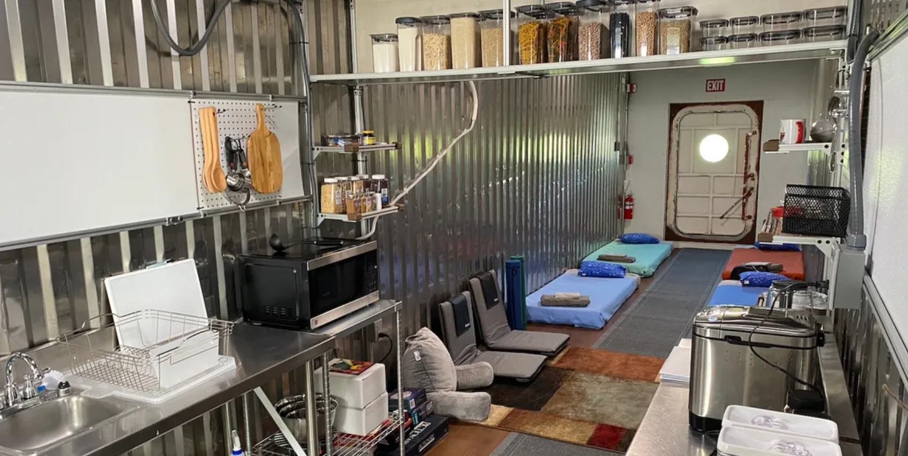
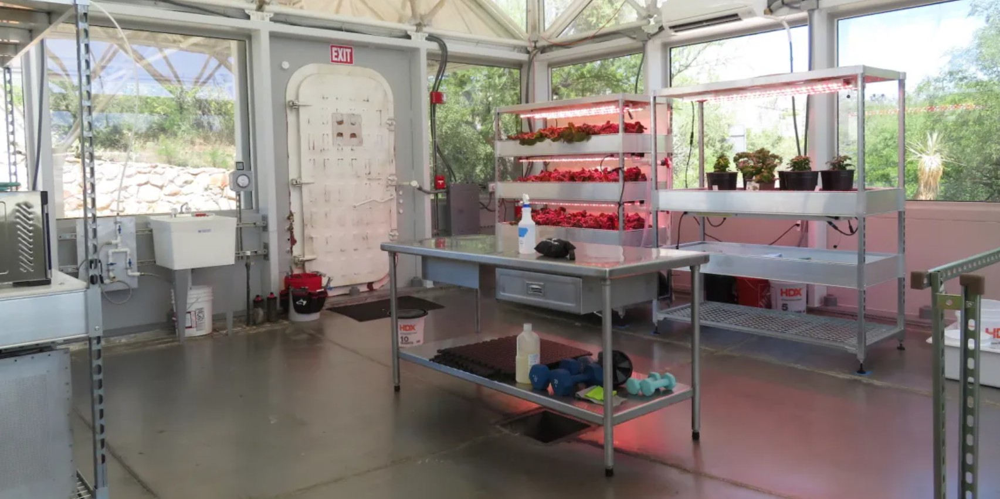
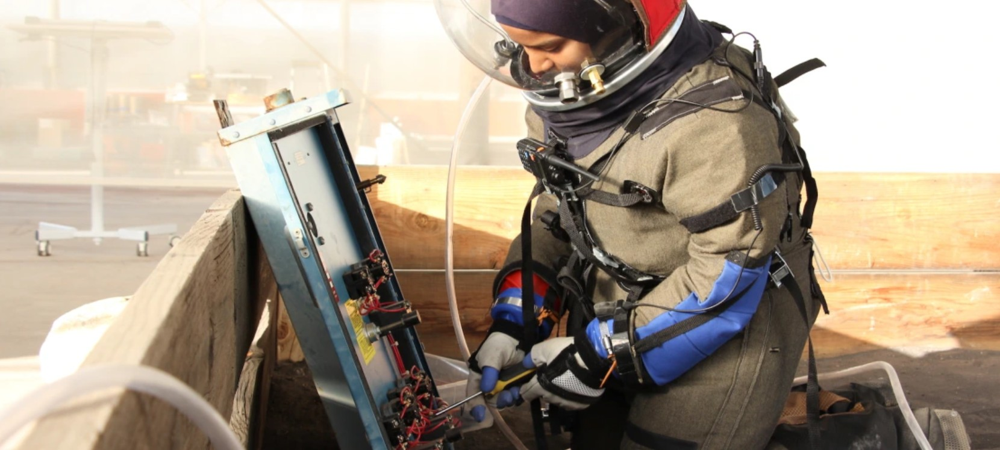
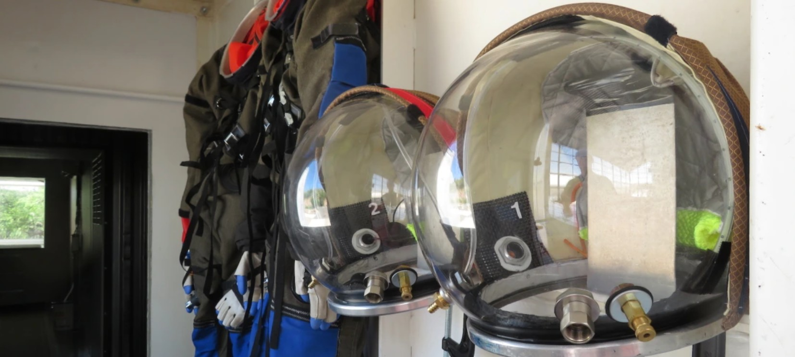
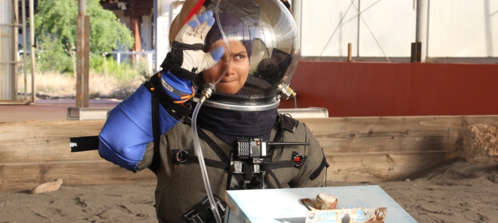

Space Analog for the Moon & Mars
Controlled-environment research and astronaut training in the SAM habitat — Biosphere 2's living legacy of space life science.

A Heritage of Closed-System Science
Biosphere 2 began with the question of how enclosed systems might support long-duration human life beyond Earth. That legacy continues through the Space Analog for the Moon and Mars (SAM) — a fully enclosed habitat where crews simulate missions to lunar and Martian surfaces.
SAM connects controlled environments, life-support thinking, food production, engineering, and Earth systems science. Crews live and work inside the habitat for days to weeks, testing protocols, technologies, and human factors that will shape humanity's next steps off-world.
What SAM Enables
Atmospheric Closure
A fully sealed atmosphere enables precise study of gas exchange, CO₂ accumulation, and life-support system performance — the core challenge of long-duration spaceflight.
EVA Operations
Extravehicular activity protocols tested in a pressurized suit bay, with excursions into a simulated regolith yard.
Food Production
Controlled-environment agriculture integrated into the habitat — testing how crews grow, harvest, and consume fresh food during missions.
Human Factors
Studying crew psychology, communication protocols, workload management, and decision-making under isolation stress.
Inside the SAM Facility




Propose a SAM Mission
Researchers, educators, and mission teams interested in using SAM should begin with the user facility research interest form. Mission proposals are reviewed for scientific merit, safety, and alignment with SAM capabilities.